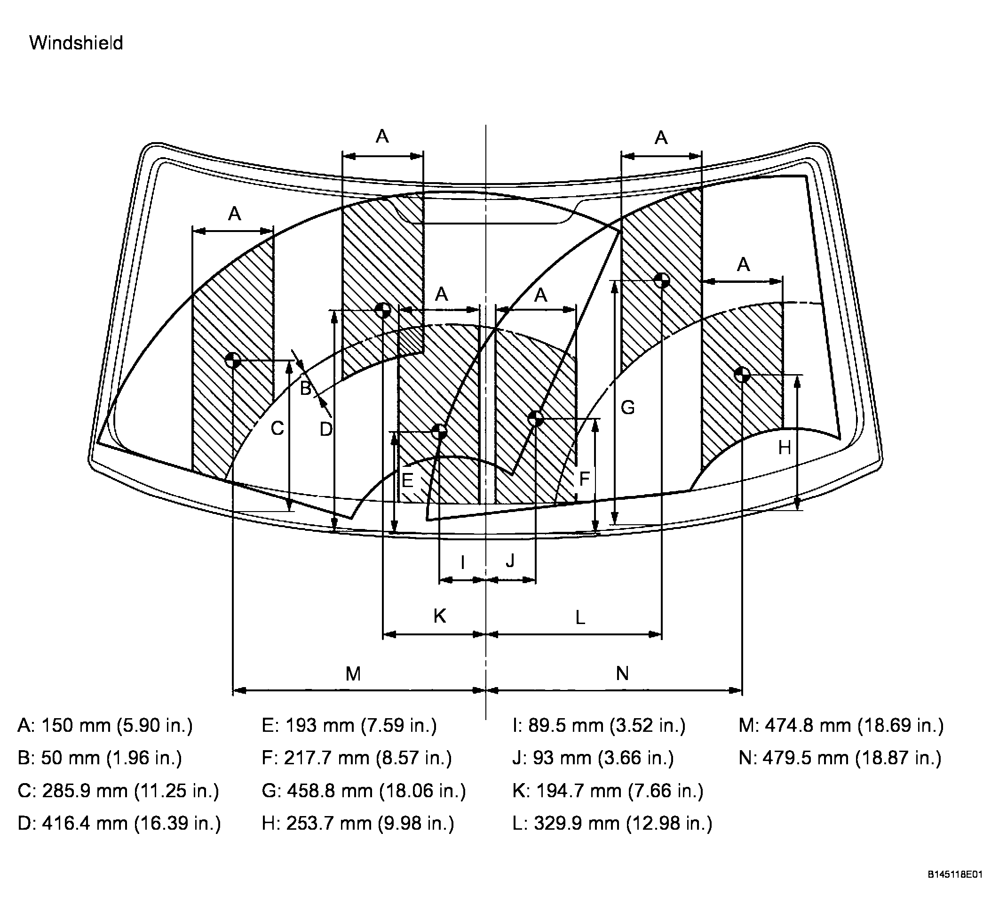

Washer Nozzle: Adjustment
- INSPECT WASHER NOZZLE
- With the engine running, check that the point where the washer fluid hits the windshield and the rear window is within the range indicated by the hatched line.

Courtesy of © TOYOTA, LICENSE AGREEMENT TMS1002
- With the engine running, check that the point where the washer fluid hits the windshield and the rear window is within the range indicated by the hatched line.
- ADJUST WASHER NOZZLE
- Using a pin, adjust the direction of the washer nozzle.NOTE: Use a pin that the end is not sharp.
- Using a pin, adjust the direction of the washer nozzle.